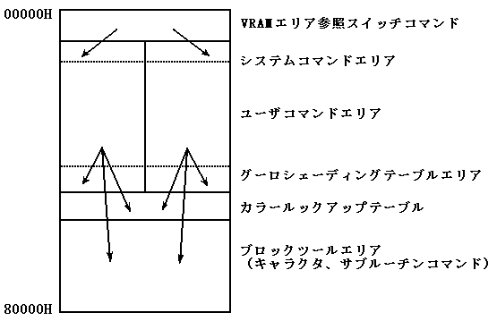
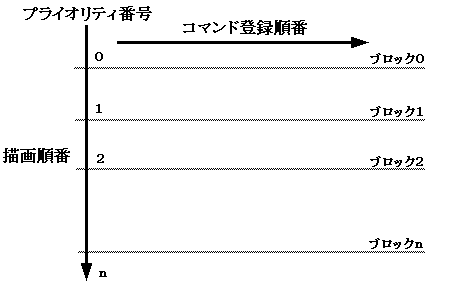

★PROGRAMMER'S GUIDE
★VDP1ライブラリ
★PROGRAMMER'S GUIDE
★VDP1ライブラリ

エリア名 | ブロック数 |
|---|---|
VRAMエリア参照スイッチコマンド | 1 |
システムコマンドエリア | 4×2 |
ユーザコマンドエリア | COMMAND_MAX×2 |
グーローシェーディングテーブルエリア | (GOUR_TBL_MAX+3)/4×2 |
カラールックアップテーブルエリア | LOOKUP_TBL_MAX |
ブロックプールエリア | 残りブロック全て |
SPR_2LocalCoord() | SPR_2SysClip() | SPR_2UserClip() | SPR_2line() |
SPR_2polyLine() | SPR_2Polygon() | SPR_2NormSpr() | SPR_2ScaleSpr() |
SPR_2DistSpr() | SPR_2Cmd() |

描画順番の設定操作は、SPR_2CloseCommand() および SPR_2FlushDrawPrty() ルーチ ン呼び出し時に行
この描画順番管理のブロック数は2Dワークエリア定義で予め指定します。描画のプライオリティ付けを
行いたくない場合、2Dワークエリア定義およびSPR_2OpenCommand()で指定できます。
#include <machine.h> #define _SPR2_ /* スプライト表示拡張ライブラリの使用 */ #include "sega_spr.h" #include "sega_scl.h" #include "sega_int.h"#define COMMAND_MAX 512 /* 最大コマンド数 */ #define GOUR_TBL_MAX 512 /* 最大グーローテーブル数 */ #define LOOKUP_TBL_MAX 512 /* 最大ルックアップテーブル数 */ #define CHAR_MAX 100 /* 最大キャラクタ数 */ #define DRAW_PRTY_MAX 256 /* 最大描画プライオリティブロック数 */ SPR_2DefineWork(work2d, COMMAND_MAX, GOUR_TBL_MAX, LOOKUP_TBL_MAX, CHAR_MAX, DRAW_PRTY_MAX) /* 2Dワークエリア定義 */ extern void vbStart(void); /* V-BLANK IN 割り込みルーチン */ extern void vbEnd(void); /* V-BLANK OUT 割り込みルーチン */ main() { set_imask(0); /* 割り込みを可にする */ SCL_Vdp2Init(); /* スクロールとプライオリティの初期化 */ SCL_SetPriority(SCL_SP0|SCL_SP1|SCL_SP2|SCL_SP3|SCL_SP4| SCL_SP5|SCL_SP6|SCL_SP7,7); SCL_SetSpriteMode(SCL_TYPE1,SCL_MIX,SCL_SP_WINDOW); SPR_2Initial(&work2d); /* 2Dスプライト表示初期化 */ INT_ChgMsk(INT_MSK_NULL, INT_MSK_VBL_IN | INT_MSK_VBL_OUT); /* V-BLANK割り込みをディセーブル */ INT_SetFunc(INT_SCU_VBLK_IN, &vbStart); /* V-BLANK IN 割り込みルーチンの登録 */ INT_SetFunc(INT_SCU_VBLK_OUT, &vbEnd); /* V-BLANK OUT 割り込みルーチンの登録*/ INT_ChgMsk( INT_MSK_VBL_IN | INT_MSK_VBL_OUT, INT_MSK_NULL); /* V-BLANK割り込みをイネーブル */ for(;;){ SPR_2SetChar(...); /* VRAMへのキャラクタデータセット */ } SPR_2FrameChgIntr(0xffff); /* フレームチェンジインターバルを */ /* 不定モードにセット */ for(;;){ ------------- /* スクロールデータセット */ SPR_2OpenCommand(SPR_2DRAW_PRTY_OFF); /* コマンド書き込みのオープン */ SPR_2SysClip(0,&xy); /* システムクリップエリアコマンド */ SPR_2LocalCoord(0,&xy); /* ローカル座標コマンド */ SPR_2Polygon(...); /* 各種スプライトコマンド */ SPR_2NormSpr(...); /* . . . SPR_2CloseCommand() ; /* コマンド書き込みクローズ */ SCL_DisplayFrame(); /* V-BLANK割り込みを待ち */ /* スプライト表示とスクロール動作を行う */ } } −Vブランク処理ルーチン(上記メインとは別ソースファイル)− #include <machine.h> #include "sega_spr.h" #include "sega_scl.h" #pragma interrupt(VbStart) #pragma interrupt(VbEnd) void VbStart(void) { SCL_VblankStart(); /* Vブランク開始VDP割り込み処理 */ -------- /* その他Vブランク開始処理 */ } void VbEnd(void) { SCL_VblankEnd(); /* Vブランク終了VDP割り込み処理 */ -------- }
★PROGRAMMER'S GUIDE
★VDP1ライブラリ